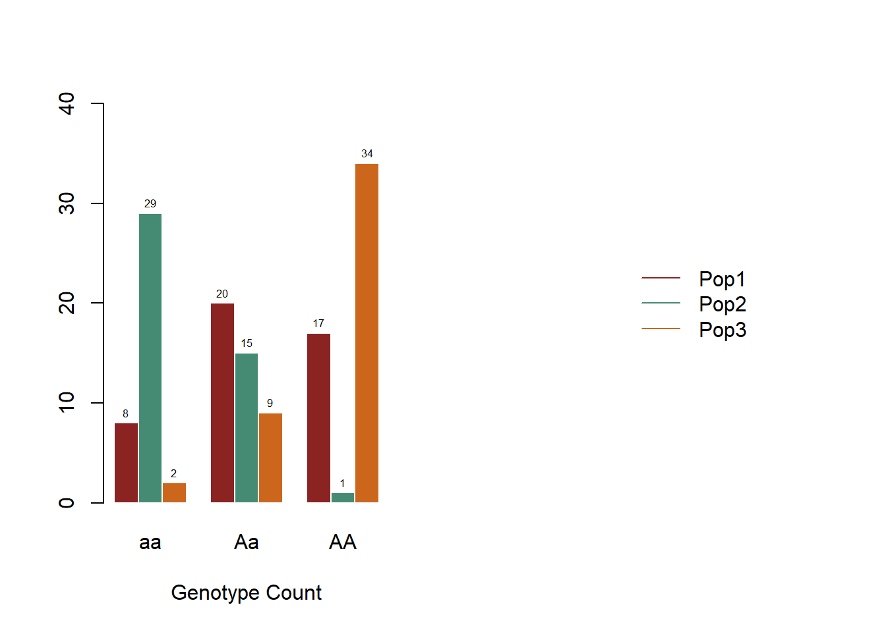
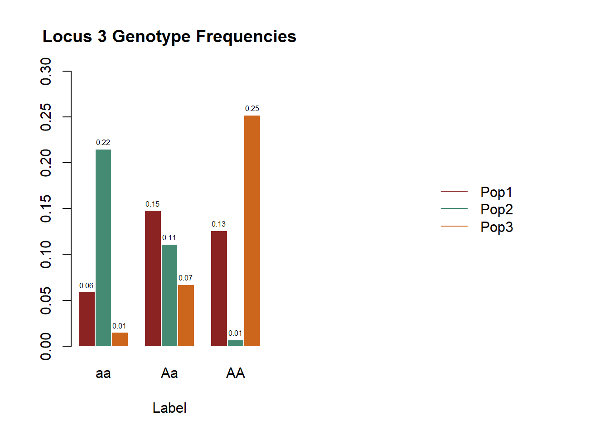
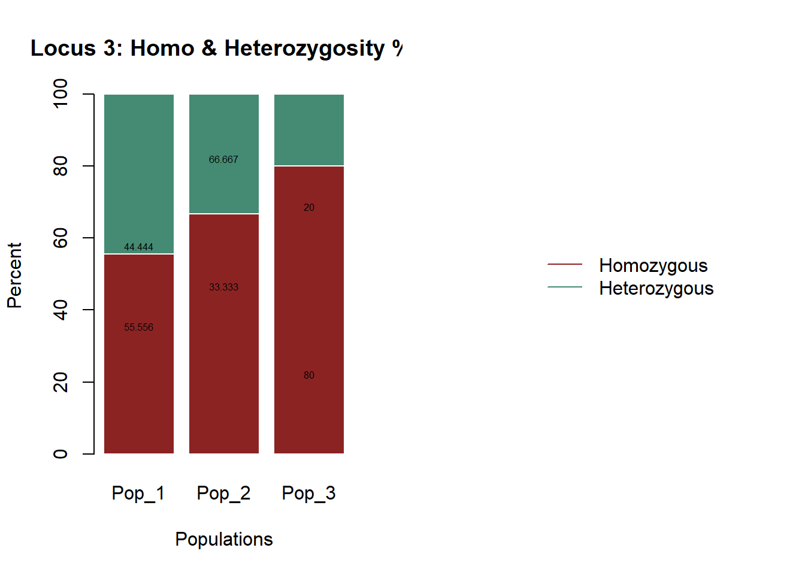
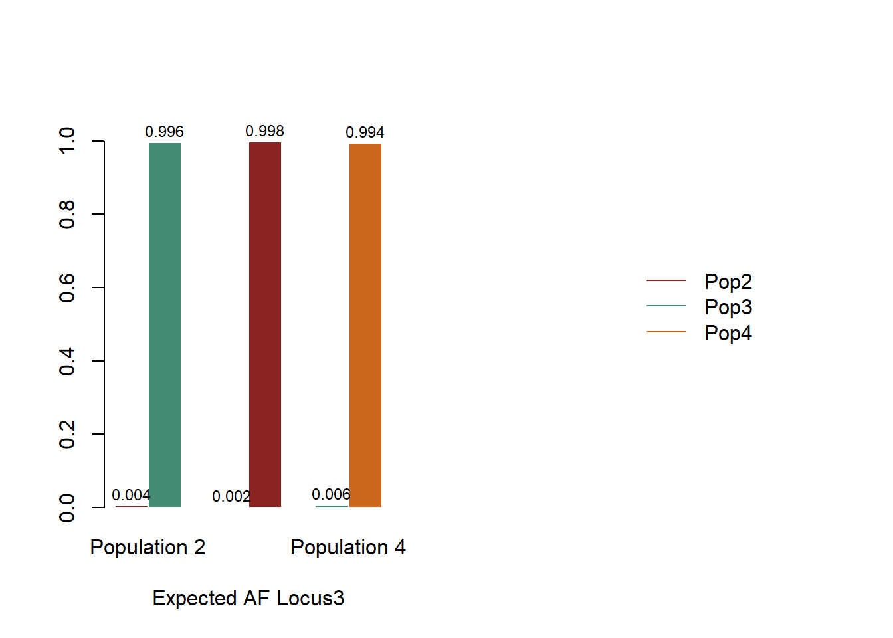
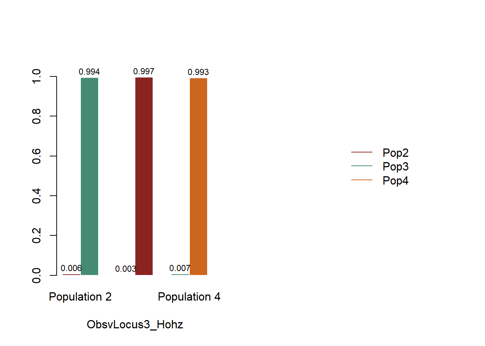
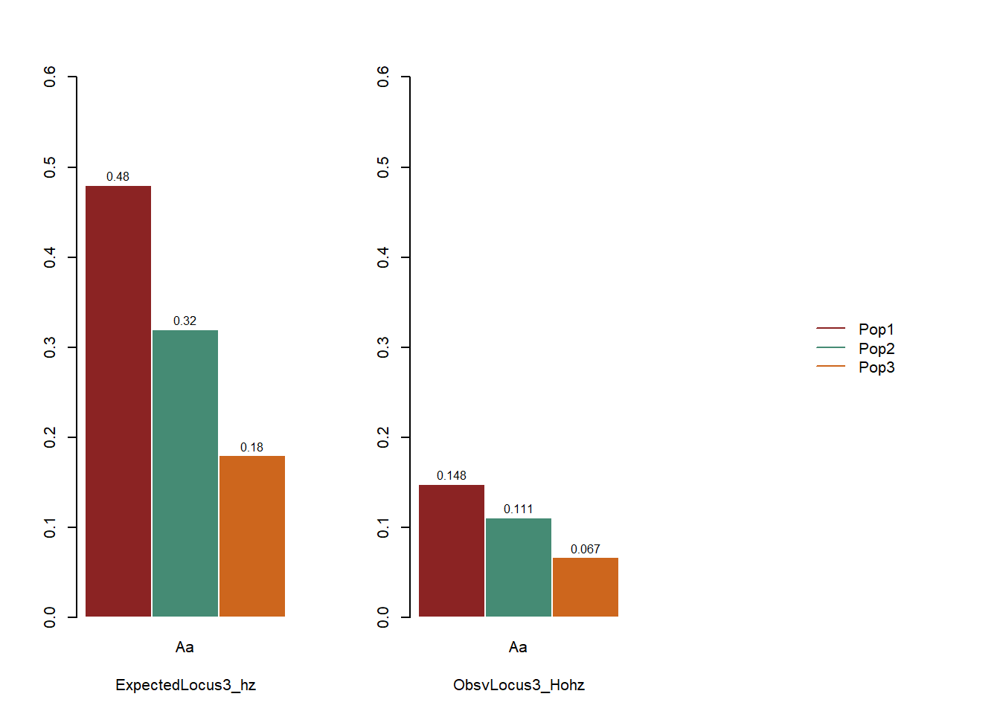

set.seed(123)
n_indv <- 45
n_loci <- 15
n_pop <- 3
n_rsloci <- 5Module 3: Official Draft
All Code Chunks
NOTES: Issues with population 2 gc_locus 5 rendering. Incorrect counts?
Setting up Populations
Below are some parameters for setting up the populations.
Defining Reference Populations
There will be five generated populations each with unique allele frequencies defined by me.
#Population 1
p_1 <- 0.6
q_1 <- 1 - p_1
Pop_1 <- data.frame(matrix(sample(c("AA", "Aa", "aa"), size = n_indv * n_loci, replace = TRUE,prob = c(p_1^2, 2 * p_1 * q_1, q_1^2)),nrow = n_indv,ncol = n_loci))
rownames(Pop_1) <- paste0("Indv_A.", 1:n_indv)
colnames(Pop_1) <- paste0("Genotype_Locus", 1:n_loci)
#Population 2
p_2 <- 0.2
q_2 <- 1 - p_2
Pop_2 <- data.frame(matrix(sample(c("AA", "Aa", "aa"), size = n_indv * n_loci, replace = TRUE,prob = c(p_2^2, 2 * p_2 * q_2, q_2^2)),nrow = n_indv,ncol = n_loci))
rownames(Pop_2) <- paste0("Indv_B.", 1:n_indv)
colnames(Pop_2) <- paste0("Genotype_Locus", 1:n_loci)
#Population 3
p_3 <- 0.9
q_3 <- 1 - p_3
Pop_3 <- data.frame(matrix(sample(c("AA", "Aa", "aa"), size = n_indv * n_loci, replace = TRUE,prob = c(p_3^2, 2 * p_3 * q_3, q_3^2)),nrow = n_indv,ncol = n_loci))
rownames(Pop_3) <- paste0("Indv_C.", 1:n_indv)
colnames(Pop_3) <- paste0("Genotype_Locus", 1:n_loci)
#Population 4
p_4 <- 0.5
q_4 <- 1 - p_4
Pop_4 <- data.frame(matrix(sample(c("AA", "Aa", "aa"), size = n_indv * n_loci, replace = TRUE,prob = c(p_4^2, 2 * p_4 * q_4, q_4^2)),nrow = n_indv,ncol = n_loci))
rownames(Pop_4) <- paste0("Indv_D.", 1:n_indv)
colnames(Pop_4) <- paste0("Genotype_Locus", 1:n_loci)
#Population 5
p_5 <- 0.7
q_5 <- 1 - p_5
Pop_5 <- data.frame(matrix(sample(c("AA", "Aa", "aa"), size = n_indv * n_loci, replace = TRUE,prob = c(p_5^2, 2 * p_5 * q_5, q_5^2)),nrow = n_indv,ncol = n_loci))
rownames(Pop_5) <- paste0("Indv_E", 1:n_indv)
colnames(Pop_5) <- paste0("Genotype_Locus", 1:n_loci)
head(Pop_1) Genotype_Locus1 Genotype_Locus2 Genotype_Locus3 Genotype_Locus4
Indv_A.1 Aa Aa Aa AA
Indv_A.2 AA Aa AA AA
Indv_A.3 Aa Aa Aa AA
Indv_A.4 aa Aa AA aa
Indv_A.5 aa aa Aa Aa
Indv_A.6 Aa Aa Aa Aa
Genotype_Locus5 Genotype_Locus6 Genotype_Locus7 Genotype_Locus8
Indv_A.1 AA Aa aa AA
Indv_A.2 Aa Aa Aa AA
Indv_A.3 AA AA Aa Aa
Indv_A.4 Aa AA Aa Aa
Indv_A.5 AA aa AA aa
Indv_A.6 AA AA AA aa
Genotype_Locus9 Genotype_Locus10 Genotype_Locus11 Genotype_Locus12
Indv_A.1 Aa Aa AA aa
Indv_A.2 Aa AA Aa Aa
Indv_A.3 aa Aa Aa Aa
Indv_A.4 Aa Aa Aa AA
Indv_A.5 Aa AA Aa AA
Indv_A.6 AA Aa aa Aa
Genotype_Locus13 Genotype_Locus14 Genotype_Locus15
Indv_A.1 AA Aa AA
Indv_A.2 Aa Aa aa
Indv_A.3 AA AA Aa
Indv_A.4 Aa aa AA
Indv_A.5 AA AA Aa
Indv_A.6 aa AA Aahead(Pop_2) Genotype_Locus1 Genotype_Locus2 Genotype_Locus3 Genotype_Locus4
Indv_B.1 aa aa aa aa
Indv_B.2 Aa Aa aa Aa
Indv_B.3 aa Aa aa aa
Indv_B.4 aa Aa Aa Aa
Indv_B.5 aa aa Aa Aa
Indv_B.6 Aa Aa Aa aa
Genotype_Locus5 Genotype_Locus6 Genotype_Locus7 Genotype_Locus8
Indv_B.1 aa Aa aa aa
Indv_B.2 Aa aa aa aa
Indv_B.3 aa Aa aa aa
Indv_B.4 aa aa aa aa
Indv_B.5 Aa Aa aa aa
Indv_B.6 aa aa aa Aa
Genotype_Locus9 Genotype_Locus10 Genotype_Locus11 Genotype_Locus12
Indv_B.1 aa aa aa aa
Indv_B.2 aa aa Aa aa
Indv_B.3 aa aa aa Aa
Indv_B.4 aa aa aa Aa
Indv_B.5 aa Aa aa aa
Indv_B.6 Aa aa aa aa
Genotype_Locus13 Genotype_Locus14 Genotype_Locus15
Indv_B.1 Aa aa aa
Indv_B.2 aa aa aa
Indv_B.3 Aa aa aa
Indv_B.4 aa aa Aa
Indv_B.5 Aa Aa aa
Indv_B.6 aa aa aahead(Pop_3) Genotype_Locus1 Genotype_Locus2 Genotype_Locus3 Genotype_Locus4
Indv_C.1 AA AA AA AA
Indv_C.2 AA AA AA AA
Indv_C.3 AA AA AA AA
Indv_C.4 AA AA AA AA
Indv_C.5 AA AA AA Aa
Indv_C.6 AA AA AA AA
Genotype_Locus5 Genotype_Locus6 Genotype_Locus7 Genotype_Locus8
Indv_C.1 Aa AA AA AA
Indv_C.2 AA AA AA Aa
Indv_C.3 Aa AA AA AA
Indv_C.4 AA AA AA AA
Indv_C.5 AA AA AA AA
Indv_C.6 AA AA Aa AA
Genotype_Locus9 Genotype_Locus10 Genotype_Locus11 Genotype_Locus12
Indv_C.1 AA AA AA AA
Indv_C.2 AA Aa Aa AA
Indv_C.3 AA AA AA AA
Indv_C.4 Aa AA AA AA
Indv_C.5 AA Aa AA AA
Indv_C.6 Aa AA AA Aa
Genotype_Locus13 Genotype_Locus14 Genotype_Locus15
Indv_C.1 AA AA AA
Indv_C.2 aa AA AA
Indv_C.3 AA AA AA
Indv_C.4 AA AA AA
Indv_C.5 Aa AA AA
Indv_C.6 AA AA AAhead(Pop_4) Genotype_Locus1 Genotype_Locus2 Genotype_Locus3 Genotype_Locus4
Indv_D.1 Aa Aa Aa AA
Indv_D.2 aa AA AA Aa
Indv_D.3 aa aa Aa aa
Indv_D.4 Aa Aa aa aa
Indv_D.5 aa aa AA aa
Indv_D.6 aa AA AA AA
Genotype_Locus5 Genotype_Locus6 Genotype_Locus7 Genotype_Locus8
Indv_D.1 aa AA Aa aa
Indv_D.2 Aa AA Aa Aa
Indv_D.3 aa Aa AA AA
Indv_D.4 aa AA aa AA
Indv_D.5 Aa Aa AA Aa
Indv_D.6 Aa Aa Aa Aa
Genotype_Locus9 Genotype_Locus10 Genotype_Locus11 Genotype_Locus12
Indv_D.1 Aa AA Aa AA
Indv_D.2 aa Aa AA aa
Indv_D.3 AA Aa Aa AA
Indv_D.4 Aa aa AA Aa
Indv_D.5 aa Aa Aa Aa
Indv_D.6 aa aa Aa AA
Genotype_Locus13 Genotype_Locus14 Genotype_Locus15
Indv_D.1 AA aa aa
Indv_D.2 Aa Aa Aa
Indv_D.3 Aa Aa aa
Indv_D.4 Aa Aa Aa
Indv_D.5 AA aa aa
Indv_D.6 Aa aa Aahead(Pop_5) Genotype_Locus1 Genotype_Locus2 Genotype_Locus3 Genotype_Locus4
Indv_E1 AA Aa AA AA
Indv_E2 Aa AA AA Aa
Indv_E3 AA AA Aa Aa
Indv_E4 Aa AA AA Aa
Indv_E5 AA Aa Aa Aa
Indv_E6 aa Aa AA AA
Genotype_Locus5 Genotype_Locus6 Genotype_Locus7 Genotype_Locus8
Indv_E1 Aa AA Aa AA
Indv_E2 Aa Aa AA Aa
Indv_E3 aa aa AA AA
Indv_E4 Aa Aa AA Aa
Indv_E5 AA Aa Aa AA
Indv_E6 aa AA AA AA
Genotype_Locus9 Genotype_Locus10 Genotype_Locus11 Genotype_Locus12
Indv_E1 aa Aa Aa Aa
Indv_E2 AA Aa Aa AA
Indv_E3 Aa AA Aa Aa
Indv_E4 AA Aa AA Aa
Indv_E5 Aa AA Aa AA
Indv_E6 Aa AA AA AA
Genotype_Locus13 Genotype_Locus14 Genotype_Locus15
Indv_E1 AA AA AA
Indv_E2 Aa aa AA
Indv_E3 aa AA Aa
Indv_E4 aa Aa Aa
Indv_E5 Aa AA Aa
Indv_E6 Aa AA AARandomized Sampling
Although I will be working with this generated data for future modules, I want to base each individual modules on randomly selected loci. I also selected 3 random populations to work with for this module.
sample(Pop_3, 1) Genotype_Locus5
Indv_C.1 Aa
Indv_C.2 AA
Indv_C.3 Aa
Indv_C.4 AA
Indv_C.5 AA
Indv_C.6 AA
Indv_C.7 AA
Indv_C.8 AA
Indv_C.9 Aa
Indv_C.10 AA
Indv_C.11 AA
Indv_C.12 AA
Indv_C.13 AA
Indv_C.14 AA
Indv_C.15 AA
Indv_C.16 AA
Indv_C.17 AA
Indv_C.18 AA
Indv_C.19 AA
Indv_C.20 Aa
Indv_C.21 Aa
Indv_C.22 AA
Indv_C.23 AA
Indv_C.24 AA
Indv_C.25 AA
Indv_C.26 AA
Indv_C.27 AA
Indv_C.28 AA
Indv_C.29 AA
Indv_C.30 aa
Indv_C.31 AA
Indv_C.32 AA
Indv_C.33 Aa
Indv_C.34 AA
Indv_C.35 AA
Indv_C.36 AA
Indv_C.37 AA
Indv_C.38 Aa
Indv_C.39 AA
Indv_C.40 Aa
Indv_C.41 AA
Indv_C.42 AA
Indv_C.43 AA
Indv_C.44 AA
Indv_C.45 AAsample(n_pop,3)[1] 3 2 1sample(n_loci, 3)[1] 10 6 3Defining Deviated Populations
These are generated populations each with unique allele frequencies defined by me to simulate deviations from HWE, such as habitat fragmentation, genetic migration and inbreeding.
#Population 6: Mirrors Population 1 but shows consequences of inbreeding after x generations
n.sindv <-10
n_sloci <-3
p_6 <- 0.6
q_6 <- 1 - p_6
Pop_6 <- data.frame(matrix(sample(c("AA", "Aa", "aa"), size = n.sindv * n_sloci, replace = TRUE,prob = c(p_6^2, 2 * p_6 * q_6, q_6^2)),nrow = n.sindv, ncol = n_sloci))
rownames(Pop_6) <- paste0("Indv_A.", 1:n.sindv)
#colnames(Pop_6) <- paste0(Pop_6$X3, Pop_6$X7, Pop_6$X9)
Pop_6 X1 X2 X3
Indv_A.1 Aa Aa Aa
Indv_A.2 Aa Aa Aa
Indv_A.3 Aa Aa Aa
Indv_A.4 Aa aa Aa
Indv_A.5 aa AA aa
Indv_A.6 Aa AA Aa
Indv_A.7 Aa AA aa
Indv_A.8 AA AA Aa
Indv_A.9 AA Aa Aa
Indv_A.10 Aa Aa AA#Population 7: Mirrors Population 2 but shows consequences of genetic drift after x generations
#p_1 <- 0.6
#q_1 <- 1 - p_1
#Pop_1 <- data.frame(matrix(sample(c("AA", "Aa", "aa"), size = n_indv * n_loci, replace = TRUE,prob = c(p_1^2, 2 * p_1 * q_1, q_1^2)),nrow = n_indv,ncol = n_loci))
#rownames(Pop_1) <- paste0("Indv_A.", 1:n_indv)
#colnames(Pop_1) <- paste0("Genotype_Locus", 1:n_loci)
#Population 8: Mirrors Population 3 but shows consequences of fixation after x generations
#p_1 <- 0.6
#q_1 <- 1 - p_1
#Pop_1 <- data.frame(matrix(sample(c("AA", "Aa", "aa"), size = n_indv * n_loci, replace = TRUE,prob = c(p_1^2, 2 * p_1 * q_1, q_1^2)),nrow = n_indv,ncol = n_loci))
#rownames(Pop_1) <- paste0("Indv_A.", 1:n_indv)
#colnames(Pop_1) <- paste0("Genotype_Locus", 1:n_loci)
#could also show founder effect, maybe. genetic migration may be abit more difficult, requiring a random sampling of allele frequencies from a parental thingy with its own sampling thingiesRandomized Sampling of Mirrored Populations
#function foundations
#beep boop
#goal: use populations 6-8 to simulate biological processes that cause deviations from H-W
#Looping sample function?
#ten individuals per generation
sample_size <- 10
#number of generations?
n_repeats <- 15
#how to inplement factor of depreciation or fixation?
#Population 6 generation list
Pop_6_lineage <- vector("list", n_repeats)
for (i in 1:n_repeats) {
Pop_6_lineage[[i]] <- Pop_6[sample(nrow(Pop_6), sample_size),]
}
# Print each sample
for (i in 1:n_repeats) {
cat("Sample", i, ":\n")
print(Pop_6_lineage[[i]])
cat("\n")
}Sample 1 :
X1 X2 X3
Indv_A.10 Aa Aa AA
Indv_A.7 Aa AA aa
Indv_A.5 aa AA aa
Indv_A.2 Aa Aa Aa
Indv_A.4 Aa aa Aa
Indv_A.8 AA AA Aa
Indv_A.3 Aa Aa Aa
Indv_A.9 AA Aa Aa
Indv_A.1 Aa Aa Aa
Indv_A.6 Aa AA Aa
Sample 2 :
X1 X2 X3
Indv_A.8 AA AA Aa
Indv_A.9 AA Aa Aa
Indv_A.10 Aa Aa AA
Indv_A.2 Aa Aa Aa
Indv_A.7 Aa AA aa
Indv_A.5 aa AA aa
Indv_A.1 Aa Aa Aa
Indv_A.6 Aa AA Aa
Indv_A.3 Aa Aa Aa
Indv_A.4 Aa aa Aa
Sample 3 :
X1 X2 X3
Indv_A.7 Aa AA aa
Indv_A.4 Aa aa Aa
Indv_A.2 Aa Aa Aa
Indv_A.8 AA AA Aa
Indv_A.1 Aa Aa Aa
Indv_A.6 Aa AA Aa
Indv_A.3 Aa Aa Aa
Indv_A.9 AA Aa Aa
Indv_A.5 aa AA aa
Indv_A.10 Aa Aa AA
Sample 4 :
X1 X2 X3
Indv_A.4 Aa aa Aa
Indv_A.6 Aa AA Aa
Indv_A.10 Aa Aa AA
Indv_A.1 Aa Aa Aa
Indv_A.8 AA AA Aa
Indv_A.7 Aa AA aa
Indv_A.9 AA Aa Aa
Indv_A.3 Aa Aa Aa
Indv_A.5 aa AA aa
Indv_A.2 Aa Aa Aa
Sample 5 :
X1 X2 X3
Indv_A.8 AA AA Aa
Indv_A.1 Aa Aa Aa
Indv_A.9 AA Aa Aa
Indv_A.2 Aa Aa Aa
Indv_A.5 aa AA aa
Indv_A.10 Aa Aa AA
Indv_A.6 Aa AA Aa
Indv_A.4 Aa aa Aa
Indv_A.7 Aa AA aa
Indv_A.3 Aa Aa Aa
Sample 6 :
X1 X2 X3
Indv_A.5 aa AA aa
Indv_A.1 Aa Aa Aa
Indv_A.2 Aa Aa Aa
Indv_A.7 Aa AA aa
Indv_A.3 Aa Aa Aa
Indv_A.4 Aa aa Aa
Indv_A.8 AA AA Aa
Indv_A.10 Aa Aa AA
Indv_A.9 AA Aa Aa
Indv_A.6 Aa AA Aa
Sample 7 :
X1 X2 X3
Indv_A.2 Aa Aa Aa
Indv_A.1 Aa Aa Aa
Indv_A.9 AA Aa Aa
Indv_A.3 Aa Aa Aa
Indv_A.4 Aa aa Aa
Indv_A.8 AA AA Aa
Indv_A.5 aa AA aa
Indv_A.7 Aa AA aa
Indv_A.6 Aa AA Aa
Indv_A.10 Aa Aa AA
Sample 8 :
X1 X2 X3
Indv_A.10 Aa Aa AA
Indv_A.8 AA AA Aa
Indv_A.6 Aa AA Aa
Indv_A.4 Aa aa Aa
Indv_A.5 aa AA aa
Indv_A.7 Aa AA aa
Indv_A.9 AA Aa Aa
Indv_A.2 Aa Aa Aa
Indv_A.3 Aa Aa Aa
Indv_A.1 Aa Aa Aa
Sample 9 :
X1 X2 X3
Indv_A.5 aa AA aa
Indv_A.2 Aa Aa Aa
Indv_A.6 Aa AA Aa
Indv_A.8 AA AA Aa
Indv_A.1 Aa Aa Aa
Indv_A.10 Aa Aa AA
Indv_A.3 Aa Aa Aa
Indv_A.4 Aa aa Aa
Indv_A.9 AA Aa Aa
Indv_A.7 Aa AA aa
Sample 10 :
X1 X2 X3
Indv_A.2 Aa Aa Aa
Indv_A.6 Aa AA Aa
Indv_A.8 AA AA Aa
Indv_A.7 Aa AA aa
Indv_A.4 Aa aa Aa
Indv_A.9 AA Aa Aa
Indv_A.5 aa AA aa
Indv_A.1 Aa Aa Aa
Indv_A.10 Aa Aa AA
Indv_A.3 Aa Aa Aa
Sample 11 :
X1 X2 X3
Indv_A.10 Aa Aa AA
Indv_A.2 Aa Aa Aa
Indv_A.4 Aa aa Aa
Indv_A.8 AA AA Aa
Indv_A.5 aa AA aa
Indv_A.6 Aa AA Aa
Indv_A.9 AA Aa Aa
Indv_A.7 Aa AA aa
Indv_A.1 Aa Aa Aa
Indv_A.3 Aa Aa Aa
Sample 12 :
X1 X2 X3
Indv_A.3 Aa Aa Aa
Indv_A.6 Aa AA Aa
Indv_A.10 Aa Aa AA
Indv_A.2 Aa Aa Aa
Indv_A.8 AA AA Aa
Indv_A.1 Aa Aa Aa
Indv_A.4 Aa aa Aa
Indv_A.7 Aa AA aa
Indv_A.5 aa AA aa
Indv_A.9 AA Aa Aa
Sample 13 :
X1 X2 X3
Indv_A.4 Aa aa Aa
Indv_A.6 Aa AA Aa
Indv_A.7 Aa AA aa
Indv_A.9 AA Aa Aa
Indv_A.2 Aa Aa Aa
Indv_A.10 Aa Aa AA
Indv_A.1 Aa Aa Aa
Indv_A.5 aa AA aa
Indv_A.3 Aa Aa Aa
Indv_A.8 AA AA Aa
Sample 14 :
X1 X2 X3
Indv_A.8 AA AA Aa
Indv_A.6 Aa AA Aa
Indv_A.2 Aa Aa Aa
Indv_A.9 AA Aa Aa
Indv_A.4 Aa aa Aa
Indv_A.10 Aa Aa AA
Indv_A.5 aa AA aa
Indv_A.1 Aa Aa Aa
Indv_A.7 Aa AA aa
Indv_A.3 Aa Aa Aa
Sample 15 :
X1 X2 X3
Indv_A.3 Aa Aa Aa
Indv_A.2 Aa Aa Aa
Indv_A.6 Aa AA Aa
Indv_A.4 Aa aa Aa
Indv_A.10 Aa Aa AA
Indv_A.1 Aa Aa Aa
Indv_A.8 AA AA Aa
Indv_A.9 AA Aa Aa
Indv_A.7 Aa AA aa
Indv_A.5 aa AA aa#make things a matrix to take mean genotype frequency per generation and use these to make calculations
#Does this even count as a function? lol
#make each sample a seperate table???
#select randomized loci to work with for original and mirrored populations (so, i do need to introduce and definea variable to show degradation, fixation, etc for the comparisons to make sense)
#ugh
#Pop_6_lineage <- cbind(table(Pop_6_lineage[1,]), table(Pop_6_lineage[2,]), table(Pop_6_lineage[3,]))
#Pop_6_lineage <- data.frame(Pop_6_lineage)
#Pop_6_lineage[order(Pop_6_lineage$)]
#Pop_6_lineage
#sample(Pop_6_lineage, 3)
#use sampled loci and genotype frequency (means?) per generation to calculate deviations..Genotype Counts and Frequencies
Genotype counts are bound per population at the sampled locus. The same formula is used for defining and binding each population’s genotype frequencies.
#Binding genotype counts per (original) population
#Testing locus 5 at populations 1, 2, 3
gc_locus3 <- rbind(table(Pop_1$Genotype_Locus3), table(Pop_2$Genotype_Locus3), table(Pop_3$Genotype_Locus3))
rownames(gc_locus3) <- c("Pop_1", "Pop_2", "Pop_3")
#Checking table
gc_locus3 aa Aa AA
Pop_1 8 20 17
Pop_2 29 15 1
Pop_3 2 9 34#Defining frequencies for Locus 5
fq_locus3 <- gc_locus3 / sum(gc_locus3)
fq_locus3 <- round(fq_locus3, digits = 3)
rownames(fq_locus3) <- c("Pop_1", "Pop_2", "Pop_3")
fq_locus3 aa Aa AA
Pop_1 0.059 0.148 0.126
Pop_2 0.215 0.111 0.007
Pop_3 0.015 0.067 0.252Calculating Heterozygosity and Homozygosity
#Homozygosity & Heterozygosity percentages
#Locus 3
HMP1L3 <- sum(gc_locus3[1,1] + gc_locus3[1,3]) / sum(gc_locus3[2,]) * 100
HTP1L3 <- 100 - HMP1L3
HMP1L3[1] 55.55556HTP1L3[1] 44.44444Pop1_HTHM <- cbind(HTP1L3, HMP1L3)
Pop1_HTHM HTP1L3 HMP1L3
[1,] 44.44444 55.55556HMP2L3 <- sum(gc_locus3[2,1] + gc_locus3[2,3]) / sum(gc_locus3[3,]) * 100
HTP2L3 <- 100 - HMP2L3
HMP2L3[1] 66.66667HTP2L3[1] 33.33333HMP3L3<- sum(gc_locus3[3,1] + gc_locus3[3,3]) / sum(gc_locus3[3,]) * 100
HTP3L3 <- 100 - HMP3L3
HTP3L3[1] 20HMP3L3[1] 80P_HTL3 <- c(HTP1L3, HTP2L3, HTP3L3)
P_HTL3 <- round(P_HTL3, digits = 3)
P_HML3 <- c(HMP1L3, HMP2L3, HMP3L3)
P_HML3 <- round(P_HML3, digits = 3)
P_HTL3[1] 44.444 33.333 20.000P_HML3[1] 55.556 66.667 80.000RBHHL3 <- rbind(P_HML3, P_HTL3)
RBHHL3.1 <- cbind(P_HTL3, P_HML3)
colnames(RBHHL3) <- c("Pop_1", "Pop_2", "Pop_3")
rownames(RBHHL3) <- c("Homozygosity % ", "Heterozygosity %")
RBHHL3 Pop_1 Pop_2 Pop_3
Homozygosity % 55.556 66.667 80
Heterozygosity % 44.444 33.333 20RBHHL3.1 P_HTL3 P_HML3
[1,] 44.444 55.556
[2,] 33.333 66.667
[3,] 20.000 80.000Expected and Observed allele freq
#Observed allele frequencies at each sampled population: L11
O_P2L3 <- c(p2o = 2 * (fq_locus3[1,2] + fq_locus3[1,3]) / (2 * n_indv))
O_P2L3 <- round(O_P2L3, digits = 3)
O_P2L3 p2o
0.006 O_Q2L3 <-c( 1 - O_P2L3 )
O_Q2L3 <- round(O_Q2L3, digits = 3)
O_Q2L3 p2o
0.994 O_P3L3 <- c(p3o = 2 * (fq_locus3[2,2] + fq_locus3[2,3]) / (2 * n_indv))
O_P3L3 <- round(O_P3L3, digits = 3)
O_P3L3 p3o
0.003 O_Q3L3 <-c( 1 - O_P3L3 )
O_Q3L3 <- round(O_Q3L3, digits = 3)
O_Q3L3 p3o
0.997 O_P4L3 <- c(p2o = 2 * (fq_locus3[3,2] + fq_locus3[3,3]) / (2 * n_indv))
O_P4L3 <- round(O_P4L3, digits = 3)
O_P4L3 p2o
0.007 O_Q4L3 <-c( 1 - O_P4L3 )
O_Q4L3 <- round(O_Q4L3, digits = 3)
O_Q4L3 p2o
0.993 AOPFL3 <- cbind(O_P2L3, O_P3L3, O_P4L3)
AOQFL3 <- cbind(O_Q2L3, O_Q3L3, O_Q4L3)
AOAFL3 <- rbind(AOPFL3, AOQFL3)
colnames(AOAFL3) <- c("Population 2", "Population 3", "Population 4")
rownames(AOAFL3) <- c("P Frequency", "Q Frequency")
AOAFL3 Population 2 Population 3 Population 4
P Frequency 0.006 0.003 0.007
Q Frequency 0.994 0.997 0.993#Expected allele frequencies
E_P2L3 <- c(p = (2 * p_2 * q_2) / (2 * n_indv))
E_P2L3 <- round(E_P2L3, digits = 3)
E_P2L3 p
0.004 E_Q2L3 <- c( 1 - E_P2L3)
E_Q2L3 <- round(E_Q2L3, digits = 3)
E_Q2L3 p
0.996 E_P3L3 <- c(p = (2 * p_3 * q_3) / (2 * n_indv))
E_P3L3 <- round(E_P3L3, digits = 3)
E_P3L3 p
0.002 E_Q3L3 <- c( 1 - E_P3L3)
E_Q3L3 <- round(E_Q3L3, digits = 3)
E_Q3L3 p
0.998 E_P4L3 <- c(p = (2 * p_4 * q_4) / (2 * n_indv))
E_P4L3 <- round(E_P4L3, digits = 3)
E_P4L3 p
0.006 E_Q4L3 <- c( 1 - E_P4L3)
E_Q4L3 <- round(E_Q4L3, digits = 3)
E_Q4L3 p
0.994 AEPFL3 <- cbind(E_P2L3, E_P3L3, E_P4L3)
AEQFL3 <- cbind(E_Q2L3, E_Q3L3, E_Q4L3)
AEAFL3 <- rbind(AEPFL3, AEQFL3)
colnames(AEAFL3) <- c("Population 2", "Population 3", "Population 4")
rownames(AEAFL3) <- c("P Frequency", "Q Frequency")
AEAFL3 Population 2 Population 3 Population 4
P Frequency 0.004 0.002 0.006
Q Frequency 0.996 0.998 0.994Expected and Observed Heterozygosity
Below I calculated expected and observed heterozygosity between each population at locus one. Observed data based on the averages from generated population and expected data based on originally set allele frequency values.
#Expected at each population for Locus 11
EHZP1L3 <- c(Aa = 2 * p_1 * q_1)
EHZP1L3 Aa
0.48 EHZP2L3 <- c(Aa = 2 * p_2 * q_2)
EHZP2L3 Aa
0.32 EHZP3L3 <- c(Aa = 2 * p_3 * q_3)
EHZP3L3 Aa
0.18 AEHZL3 <- rbind(EHZP1L3, EHZP2L3, EHZP3L3)
AEHZL3 Aa
EHZP1L3 0.48
EHZP2L3 0.32
EHZP3L3 0.18#Observed
OHZP1L3 <- c(Aa = fq_locus3[1,2])
OHZP1L3 Aa
0.148 OHZP2L3 <- c(Aa = fq_locus3[2,2])
OHZP2L3 Aa
0.111 OHZP3L3 <- c(Aa = fq_locus3[3,2])
OHZP3L3 Aa
0.067 AOHZL3 <- rbind(OHZP1L3, OHZP2L3, OHZP3L3)
AOHZL3 Aa
OHZP1L3 0.148
OHZP2L3 0.111
OHZP3L3 0.067FIS Testing
Calculations for FIS
####HWE Statistical Tests
?? a linear regression model as well as using boxplots to show deviation and test skewness?? refer to stats notes…
####Variable Glossary
…
Figures
Genotype Counts
#Grouped Graphs for Genotype Counts
par(mfrow = c(1,2))
ylimgc <- c(0, 40)
gc_locus3R <- round(gc_locus3, digits = 2)
SPGCL3 <- barplot(gc_locus3, col=colors()[c(36, 12, 55)], border = "white", font.axis = 1, beside = T, xlab="Genotype Count", font.lab=1, ylim = ylimgc)
colnames(SPGCL3) <- c("aa", "Aa", "AA")
text(x = SPGCL3, y = gc_locus3, labels = gc_locus3R, adj = c(.5, -0.75), cex = .5, col = "black")
plot.new()
legend("center", legend = c("Pop1", "Pop2", "Pop3"), col = colors()[c(36, 12, 55)], lty = 1, bty = "n")
Genotype Frequencies
#Grouped Graphs for Genotype Frequencies
par(mfrow = c(1,2))
ylimfq <- c(0, 0.3)
fq_locus3R <- round(fq_locus3, digits = 2)
SPGFL3 <- barplot(fq_locus3, col=colors()[c(36, 12, 55)], border = "white", font.axis = 1, beside = T, xlab="Label", main = "Locus 3 Genotype Frequencies", font.lab=1, ylim = ylimfq)
colnames(SPGFL3) <- c("aa", "Aa", "AA")
text(x = SPGFL3, y = fq_locus3, labels = fq_locus3R, adj = c(.5, -0.75), cex = .5, col = "black")
plot.new()
legend("center", legend = c("Pop1", "Pop2", "Pop3"), col = colors()[c(36, 12, 55)], lty = 1, bty = "n")
Heterozygosity vs. Homozygosity
par(mfrow = c(1,2))
SPHHL3 <- barplot(RBHHL3, col=colors()[c(36,12)], border = "white", font.axis = 1, ylab = "Percent", xlab = "Populations", main = "Locus 3: Homo & Heterozygosity % ", font.lab = 1)
text(x = SPHHL3, y = RBHHL3, labels = RBHHL3.1, adj = c(.5, -0.5), cex = .5, col = "black")
plot.new()
legend("center", legend = c("Homozygous", "Heterozygous"), col = colors()[c(36, 12)], lty = 1, bty = "n")
Expected & Observed Allele Frequencies
par(mfrow = c(1,2))
ylimfqh <- c(0, 1.1)
EAFBP <- barplot(AEAFL3, col=colors()[c(36, 12, 55)], border = "white", font.axis = 1, beside = T, xlab="Expected AF Locus3", font.lab=1, ylim = ylimfqh)
#rownames(AEAFL11) <- c("P_p2", "QP2", "P_P3", "QP3", "P_P4", "QP4")
text(x = EAFBP, y = AEAFL3, labels = AEAFL3, adj = c(.5, -0.5), cex = .75, col = "black")
plot.new()
legend("center", legend = c("Pop2", "Pop3", "Pop4"), col = colors()[c(36, 12, 55)], lty = 1, bty = "n")
par(mfrow = c(1,2))
OAFBP <- barplot(AOAFL3, col=colors()[c(36, 12, 55)], border = "white", font.axis = 1, beside = T, xlab="ObsvLocus3_Hohz", font.lab=1, ylim = ylimfqh)
#rownames(AOAFL11) <- c("Pop2", "Pop3", "Pop4")
text(x = OAFBP, y = AOAFL3, labels = AOAFL3, adj = c(.5, -0.5), cex = .75, col = "black")
plot.new()
legend("center", legend = c("Pop2", "Pop3", "Pop4"), col = colors()[c(36, 12, 55)], lty = 1, bty = "n")
Expected and Observed Heterozygosity
par(mfrow = c(1,3))
ylimfqh <- c(0, 0.6)
EHZBP <- barplot(AEHZL3, col=colors()[c(36, 12, 55)], border = "white", font.axis = 1, beside = T, xlab="ExpectedLocus3_hz", font.lab=1, ylim = ylimfqh)
rownames(AEHZL3) <- c("Pop1", "Pop2", "Pop3")
text(x = EHZBP, y = AEHZL3, labels = AEHZL3, adj = c(.5, -0.5), cex = .75, col = "black")
OHZBP <- barplot(AOHZL3, col=colors()[c(36, 12, 55)], border = "white", font.axis = 1, beside = T, xlab="ObsvLocus3_Hohz", font.lab=1, ylim = ylimfqh)
rownames(AOHZL3) <- c("Pop1", "Pop2", "Pop3")
text(x = OHZBP, y = AOHZL3, labels = AOHZL3, adj = c(.5, -0.5), cex = .75, col = "black")
plot.new()
legend("center", legend = c("Pop1", "Pop2", "Pop3"), col = colors()[c(36, 12, 55)], lty = 1, bty = "n")
Boxplots
Showing delineation…
#par(mfrow = c(1,3))
#boxplot(x)Statistical Analysis
boop
#stats...